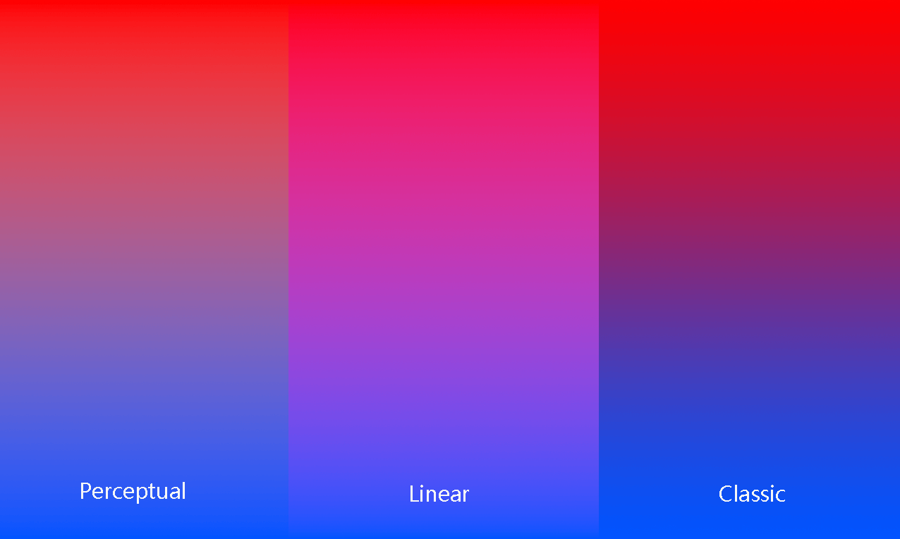

Gradient 渐变色研究
图片中经常可以使用到渐变色，两个颜色形成自然过渡效果，在实际体验中可以发现，有时候渐变色看起来很舒服，有时候看起来比较别扭，下面分析一下其中原因。
下图是两个颜色组成的渐变效果，它们两端的颜色都一样，但是效果相差很多：
明显左边的看起来更加舒服，右边的比较生硬。
我们知道每个颜色都是 RGB 的组合，通常 RGB 各自有 256 种变化范围，它们之间的组合产生了各种颜色：
在 Photoshop 中选取一种颜色的方法有四种：RGB，HSB，LAB，CMYK。最常用的就是 RGB 和 HSB，下面主要围绕这两种方法介绍。
不同于 RGB，HSB 或 HSV 拾取一种颜色是通过 H色相，S饱和度，B亮度确定的：
当我们需要创建两个颜色的渐变图时，如果使用 RGB 模式，则它们的渐变过程是直接从两个颜色之间直线过渡。而使用 HSB 模式，它们的渐变过程是围绕 H色相环过渡到目标颜色：
所以 RGB 模式就会穿过中间的灰色地带，效果就是过渡中颜色变淡变暗，这也就是看起开不舒服的原因。而 HSB 模式下饱和度和亮度都保持不变，只是色相发生变化，从而整体色彩持续保持鲜艳，呈现的效果就是看起来舒服。
Photoshop 中创建渐变时，提供了 3 种模式可供选择，还原了 RGB 模式 和 HSB 模式的规则，分别是：perceptual，linear，classic：
各种模式区别为：
- linear 最接近 HSB 模式，保证了过渡时候的饱和度和亮度，反映出颜色最鲜艳
- perceptual 在过渡中保证亮度稳定，但是降低了饱和度
- classic 在过渡中保证了饱和度稳定，但是降低了亮度
三者对比图如下：

实际使用中根据需要选择合适效果。
参考链接：
https://twitter.com/finmoorhouse/status/1543580508508065794
标签：无
高。以前用RGB过度，颜色灰暗的部分很多。